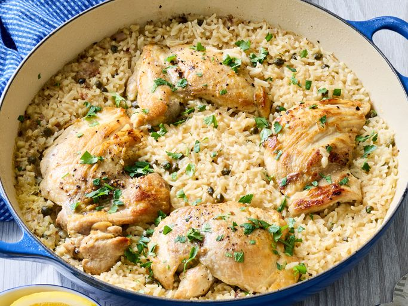

One-Pan Chicken Piccata and Rice

Description
Chicken Piccata is a classic Italian-American dish known for its bright, tangy flavors, and this one-pan version takes it a step further by cooking fluffy rice right alongside the chicken. Juicy chicken, fluffy rice, and a bold sauce made with white wine, lemon, and briny capers all come together in a single pan, letting the rice soak up every bit of that savory piccata goodness.
What makes this recipe stand out is how effortlessly elegant it feels for something so simple to pull off. The chicken cooks alongside traditional piccata flavors, absorbing the brightness of lemon and the depth of capers, making it an impressive dinner that is secretly easy to make. Whether you are cooking for guests or just want a weeknight meal that feels a little special, this one-pan dish delivers restaurant-quality results with minimal cleanup.
Ingredients
- 1 tablespoon olive oil
- 1 1/2 pounds boneless, skinless chicken thighs (4 thighs)
- 1 teaspoon salt, divided
- 1 shallot, finely chopped
- 1 cup jasmine rice, rinsed
- 4 cloves garlic, minced
- 3 cups chicken stock or broth
- 1 teaspoon lemon zest
- 1/4 cup fresh lemon juice
- 2 tablespoons capers, drained
- 1/2 teaspoon freshly ground black pepper
- 2 tablespoons chopped fresh parsley
Steps
- Heat olive oil in a 12-inch skillet over medium-high heat until shimmering.
- Season chicken thighs evenly with 1/2 teaspoon salt. Add chicken to the skillet and cook until lightly browned, about 5 minutes. Flip and cook until nearly cooked through, 3 to 4 minutes more. Transfer chicken to a plate.
- Add shallot to the skillet and cook until softened and fragrant, 1 to 2 minutes. Stir in rice and garlic and cook, stirring constantly, until rice is lightly toasted, 1 to 2 minutes.
- Pour in chicken stock, lemon zest, lemon juice, capers, remaining 1/2 teaspoon salt, and pepper. Stir to combine.
- Bring mixture to a boil, then reduce heat to low. Cover and simmer for 5 minutes. Return chicken and any accumulated juices to the skillet. Continue to simmer, covered, until rice is tender and chicken is cooked through (170 to 195 degrees F (77 to 90 degrees C), 10 to 15 minutes.
- Remove skillet from heat and let stand, covered, for 5 minutes. Sprinkle with parsley before serving.
Home